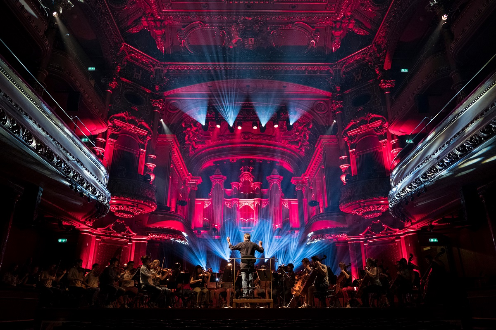

Istoria Zilei Internaționale a Teatrului
Ziua Internațională a Teatrului este sărbătorită anual pe 27 martie, pentru a marca importanța teatrului în societate și a celebra diversitatea culturală adusă de arta dramatică. A fost declarată oficial în 1961 de către Institutul Internațional de Teatru (ITI), iar în această zi sunt organizate evenimente și spectacole în întreaga lume.
Scopul acestei zile este de a aduce în prim-plan impactul social al teatrului și de a promova dialogul între diferite culturi și națiuni prin intermediul artei teatrale.
Activități și evenimente organizate cu ocazia Zilei Internaționale a Teatrului
- Spectacole de teatru și piese noi
- Ateliere de lucru și sesiuni interactive pentru public
- Proiecții de filme despre istoria teatrului
- Întâlniri cu actori și regizori faimoși
- Evenimente educaționale pentru tineri despre arta teatrului
Imagini din diverse spectacole
